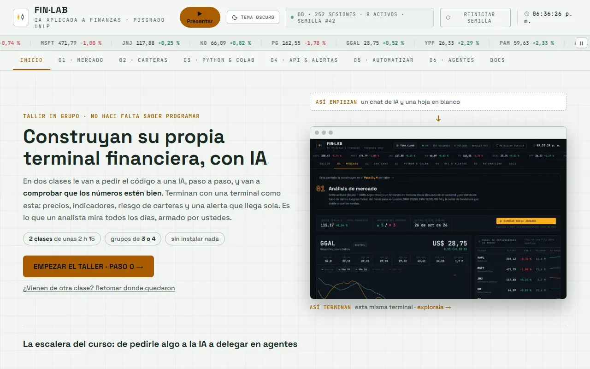

PASO 0 · ANTES DE ESCRIBIR UNA SOLA LÍNEA
Preparar el equipo, el chat y las reglas del proyecto
La IA trabaja mejor cuando sabe desde el principio qué están construyendo y con qué reglas. En este paso reparten roles, crean la carpeta de trabajo y le dan a la IA un prompt de contexto que va a valer para todo el taller.
Tranquilos: no hace falta entender el código. Todo lo que hay que llevar a otro lado tiene un botón ⧉ COPIAR. Los textos largos están plegados y se abren con VER EL TEXTO solo si les da curiosidad.
Qué van a lograr
Un chat de IA que ya “sabe” que van a construir una terminal financiera en un solo archivo HTML, con datos simulados y en español, y una carpeta donde guardar cada versión.
Entendido. Vamos a construir “FIN·LAB Grupo 1” en un único archivo HTML, con React y Recharts por CDN, datos simulados deterministas y textos en español. Cuando me pases el primer paso, te devuelvo el archivo completo.
A dónde vamos
- Esqueleto (todavía no)
- Datos (todavía no)
- Mercado (todavía no)
- Indicadores (todavía no)
- Carteras (todavía no)
- API (todavía no)
- Colab (todavía no)
- n8n (todavía no)
- #/guiado (todavía no)
- Clave (todavía no)
- Modelo (todavía no)
- Agente (todavía no)
- Consejo (todavía no)
- MCP (todavía no)

El prompt de contexto
Qué hacer, clic por clic
- Repartan los roles y anoten en un papel quién hace qué en los pasos 1 a 3. Después rotan.
- Creen la carpeta finlab en el escritorio de la computadora del piloto.
- Abran un chat nuevo en ChatGPT, Claude o Gemini. Usen uno solo para todo el taller. Si se cierra, abran uno nuevo, vuelvan al punto 5 de esta lista (el constructor) y, desde el paso 2 del taller en adelante, peguen también su finlab.html actual.
- Regla del grupo: al chat de IA no se pega nada que no publicarían: ni datos de clientes, ni carteras reales, ni contraseñas. En este taller todo es simulado.
- Completen el constructor de arriba. Si no saben qué poner, dejen los valores que trae.
- Toquen “COPIAR PROMPT”, péguenlo en el chat y envíenlo.
- Lean la respuesta. Si la IA ya empezó a escribir código, respóndanle: “Todavía no. Esperá el paso 1.”
Cómo comprobar
- La IA respondió “Entendido” (o algo equivalente) sin escribir código.
- Si hizo preguntas, las contestaron en el mismo chat.
- La carpeta existe y todos saben dónde está.
Si algo falla
- La IA escribió código igual: no pasa nada. Respondan “Gracias, todavía no. Esperá el paso 1” y sigan.
- La IA se niega o dice que no puede crear archivos: aclárenle “Solo escribí el contenido del archivo; yo lo guardo”.
Para entender más · cómo funciona y palabras nuevas
El flujo de este paso
Repartan los roles
Piloto, redactor, auditor y presentador. Rotan en cada paso.
Armen el prompt de contexto
Completan cuatro casilleros y lo copian con un botón.
Péguenlo en un chat nuevo
La IA responde “Entendido” y queda lista para el paso 1.
Creen la carpeta finlab
Ahí van a guardar cada versión del archivo.